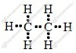
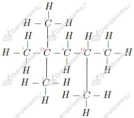

Związek ten zawiera w cząsteczce jeden atom węgla, cztery atomy wodoru oraz jeden atom tlenu. Masa atomowa węgla to 12 u, wodoru 1 u, zaś tlenu 16 u. Liczymy stosunek masowy:
Masa cząsteczkowa tego związku to:
Liczymy skład procentowy:
Odpowiedź: Stosunek masowy pierwiastków w tym związku to mC:mH:mO = 3:1:4, zaś skład procentowy to 37,5% węgla, 12,5% wodoru oraz 50% tlenu.
Wzór tego związku możemy zapisać jako CxHyOz. Zaczynamy od obliczenia zawartości procentowej tlenu:
Masa atomowa węgla to 12 u, wodoru 1 u, zaś tlenu 16 u. Liczymy wartości indeksów x, y oraz z.
Wzór sumaryczny tego związku to
Zaczynamy od ustalenia stosunku ilościowego, w oparciu o stosunek masowy, atomów w tym związku i wyprowadzenia wzoru empirycznego CxHyOz. Masa atomowa węgla to 12 u, wodoru 1 u, zaś tlenu 16 u.
Możemy to rozbić na części jako:
Z tego wyliczamy wartości x, y oraz z:
Podstawiamy to do stosunku ilościowego x:y:z i otrzymujemy:
Wzór empiryczny tego związku to CH2O.
Wyznaczamy wzór rzeczywisty:
Wzór rzeczywisty tego związku to C6H12O6.
Zapisujemy równanie reakcji spalania:
Liczymy liczbę moli otrzymanego CO2:
Spalając 1,6 g węglowodoru otrzymujemy zatem 0,1 mola CO2. Z równania reakcji widzimy, że ilość moli CO2 równa jest ilości moli atomów węgla w molu cząsteczek węglowodoru. Liczymy zatem, jaka masa węglowodoru pozwoli otrzymać jeden mol CO2, a tym samym jaka masa węglowodoru zawiera w sobie jeden mol atomów węgla.
Zatem masa związku, zawierającego jeden mol atomów węgla to 16 g. Jeden mol atomów węgla ma masę 12 g. Liczymy ilość moli atomów wodoru w związku wiedząc, że masa jednego mola atomów tego pierwiastka to 1 g.
Wzór empiryczny i zarazem rzeczywisty tego związku to CH4.
a) Równanie reakcji:
b)
Z równania reakcji wynika, że stosunek molowy spalanego związku do otrzymanego tlenku węgla(IV) wynosi 1:2. Masa molowa tego związku to 46 g/mol, zaś jeden mol CO2 w warunkach normalnych zajmuje 22,4 dm3.
Odpowiedź: Wydzieli się 2,24 dm3 tlenku węgla(IV).
Wzory alkanów to:
wyjaśnienie: wzór ogólny alkanów to CnH2n+2.
a)
nazwa: butan
wzór półstrukturalny:
b)
nazwa: pentan
wzór półstrukturalny:
c)
nazwa: propan
wzór półstrukturalny:
Wzór:

Liczba elektronów tworzących wiązania - 14
Liczba wiązań typu σ - 7
Atomy węgla I-rzędowe łączą się z tylko jednym innym atomem węgla oraz 3 atomami wodoru. Atomy II-rzędowe z dwoma innymi atomami węgla, III-rzędowe z trzema, zaś IV-rzędowe z czterema.
Przykładowy wzór strukturalny alkanu spełniającego warunki podane w zadaniu:

Nazwa powyższego alkanu: 2,2,4-trimetylopentan
Uwaga: Powyższy węglowodór to jedynie jeden z kilku przykładów związków spełniających warunek z zadania. Możliwe są też inne kombinacje.
Poprawny podział:
Węglowodory o 1-4 atomach węgla w cząsteczce występują w warunkach normalnych w stanie gazowym, 5-16 atomów węgla w stanie ciekłym, zaś poqyżej 17 atomów węgla w stanie stałym.